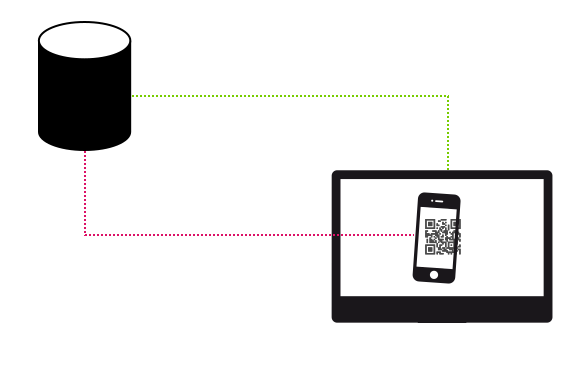

Master Strategic Innovation Experience & Interaction Design
Systematisierung von Gesten für Multitouch Displays
Die Studierenden können Interaktionsmöglichkeiten, bezogen auf einen technischen Kontext, analysieren und systematisieren, um aus den gegebenen Möglichkeiten, die sinnvollsten Interaktionen für ein Handlungsziel oder eine Funktion auszuwählen und sie können diese Auswahl argumentieren.
Lernziel
Die Studierenden können Interaktionsmöglichkeiten, bezogen auf einen technischen Kontext, analysieren und systematisieren, um aus den gegebenen Möglichkeiten, die sinnvollsten Interaktionen für ein Handlungsziel oder eine Funktion auszuwählen und sie können diese Auswahl argumentieren.
Lernziel
Wir entwickeln einen Interaction Service für Multi-Device Kopplungen.
Szenario // Software as a Service

Die Studierenden können Interaktionsmöglichkeiten, bezogen auf einen technischen Kontext, analysieren und systematisieren, um aus den gegebenen Möglichkeiten, die sinnvollsten Interaktionen für ein Handlungsziel oder eine Funktion auszuwählen und sie können diese Auswahl argumentieren.
Welche Interaktionsmöglichkeiten gibt es?
Welche Merkmale und Merkmalsausprägungen haben sie?
Welche Interaktionsmöglichkeiten gibt es?
Welche Merkmale und Merkmalsausprägungen haben sie?
Aufgabe
Analysieren Sie in 2er Teams die bereitgestellten Interaktionen und notieren Sie die jeweiligen Merkmale, sowie deren Ausprägungen, um im nächsten Schritt auf dieser Basis eine Systematisierung vornehmen zu können.
Dauer: 10 Minuten
Wie lassen sich die Interaktionsmöglichkeiten systematisieren?
Welche Interaktionsmöglichkeiten wären für Pong sinnvoll?
Danke fürs Mitmachen!
twitter.com/cnoss
http://christiannoss.de
Use a spacebar or arrow keys to navigate